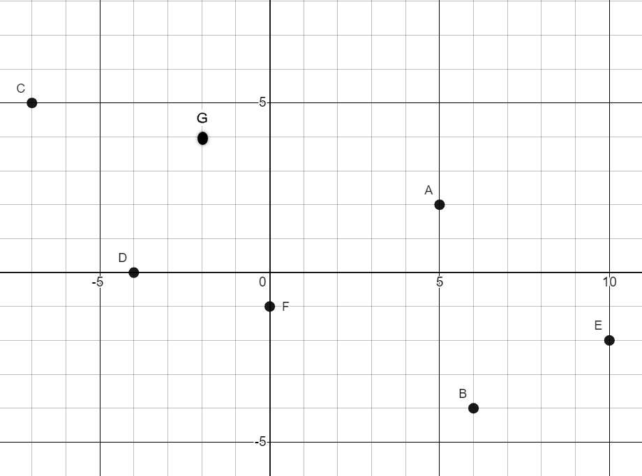
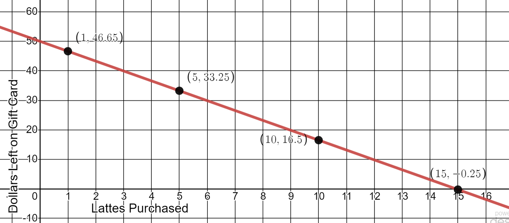
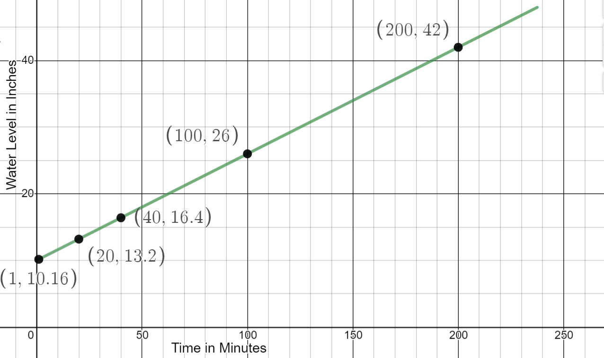

4.6 Graphing Lines
- To join a health club Mark must pay a $75 startup fee and a $30 fee for each month he is a member.
- Write an equation for the total cost of the membership.
- How many points are needed to draw this graph? Complete the table with your points:
- Graph the function. Label the horizontal and vertical axes and the unit of measure. Label the scale on each axis.
y = 75 + 30x
Two points make a line, but it is best to have three or more points so that the line can be drawn accurately.
Number of Months
Cost of Membership
2
$135
10
$375
16
$555
22
$735
-

Write the ordered pair for each point on the graph.- Point A
- Point B
- Point C
- Point D
- Point E
- Point F
(5,2)
(6,-4)
(-7,5)
(-4,0)
(10,-2)
(0,-1)
- Draw a line passing through points D and F
- Name the y-intercept of this line.
- Name the x-intercept of this line.

Point F (0,-1)
Point D (-4,0)
- You buy a $200 printer and the ink cartridges cost $25 each. Write an equation for total cost.
Create a table of values, then graph the equation.
y = 25x + 200
Cartridges
Total Cost
0
$200
1
$225
5
$325
10
$450
15
$575

- You get a $50 Starbucks gift card for your birthday. A short latte costs $3.35.
Write an equation for how much is left on your gift card.
\(y=-3.35x+50\), where x is the number of lattes you buy.
Complete a table, then graph the equation.
Number of Lattes
Amount Left on Card
1
$46.65
5
$33.25
10
$16.50
15
-$0.25

- It’s summer and Jill is filling her above ground pool. It takes 25 minutes to raise the water level 4 inches. The water level is already 10 inches.
- Write an equation for the water level of the pool.
\( y = \frac{4}{25}x+10 \text{ or } y = 10 + \frac{4}{25} x \)
- Graph the equation.

- Write an equation for the water level of the pool.
-
Graph the equation \(y = -\frac{2}{5}x +3\)